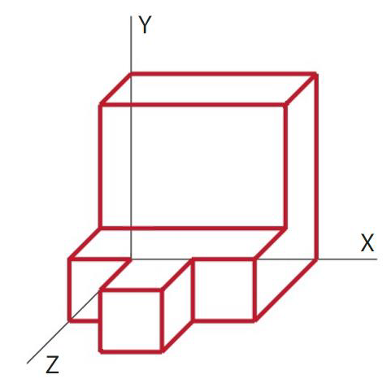
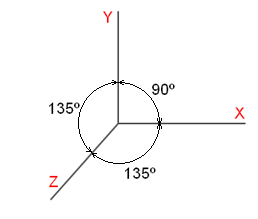
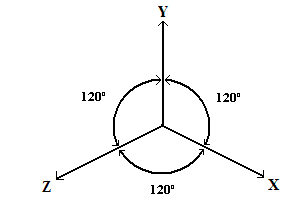
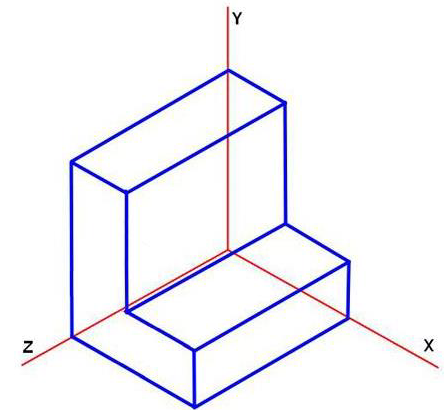

¿ Qué son las vistas?
La vista no es más que el aspecto de un objeto visto desde un lugar determinado.
Las vistas diédricas o simplemente vistas de una pieza son la representación más normal en los planos técnicos.
En ellas nunca hay deformaciones y representan las piezas con todos sus detalles y las dimensiones necesarias para su fabricación.
Puedes pensar que podemos ver un objeto desde infinitos puntos de vista pero en dibujo técnico consideramos hasta 6 vistas diferentes, aunque normalmente con 3 vistas es suficiente.
La pieza puede ser vista desde arriba (PLANTA) o desde abajo, desde enfrente (ALZADO) o desde detrás, desde un lateral (PERFIL DERECHO) o desde el otro lateral (PERFIL IZQUIERDO).
Os dejo el siguiente enlace a un video que lo explica muy bien y además resuelve los ejercicios de forma muy sencilla.
Debemos distinguir entre dos tipos de perspectivas, la diferencia es el ángulo que forman los ejes donde se representan las vistas anteriormente indicadas. Explicamos a continuación las características de ambas.
PERSPECTIVA CABALLERA:
La perspectiva caballera parte de los tres ejes de coordenadas X, Y y Z ( alto y fondo) colocados de la siguiente manera.

Para evitar la sensación de deformación de la pieza, en la perspectiva caballera todas las dimensiones en el eje Z se reducen por el factor 0,7.
PERSPECTIVA ISOMETRICA:
La perspectiva isométrica parte de los tres ejes de coordenadas X, Y y Z ( alto y fondo) colocados de la siguiente manera.

Esta perspectiva no tiene sensación de deformación, con lo que no hay que aplicar ningún coeficiente corrector a ninguna dimensión de ningún eje.
